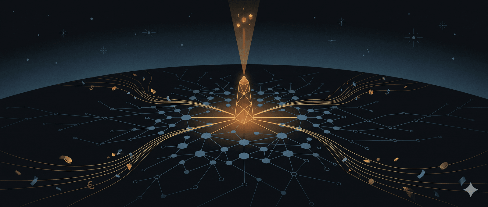

tác giả: Ricardo Hausmann và Andrés Velasco
Trong khi sức mạnh của Mỹ trong thế kỷ 20 dựa chủ yếu vào quy mô sản xuất, khả năng quân sự và sức mạnh của đồng đô la, thì trong thế kỷ 21, sức mạnh đó có thể ngày càng dựa vào việc sở hữu hạ tầng AI không thể thiếu. Thách thức đối với thế giới sẽ là làm thế nào để trả tiền cho việc tiếp cận hạ tầng ấy.
Cơn sốt AI có phải là một bong bóng không? Không ai có thể chắc chắn. Nhưng một cách để trả lời câu hỏi đó là đặt ra một câu hỏi dễ quản lý hơn (và thú vị hơn): Một nền kinh tế thế giới kiểu gì phải xuất hiện để các mức định giá thị trường hiện nay trở nên hợp lý?
Hãy xem xét nhóm cốt lõi các công ty nằm ở trung tâm của câu chuyện AI: Nvidia, Alphabet, Apple, Microsoft, Meta, Broadcom, Tesla, OpenAI, Anthropic, SpaceX-xAI và Amazon Web Services. Tổng thể, chúng thể hiện một cược thị trường đáng kinh ngạc. Theo một tiêu chuẩn bảo thủ — rằng vào năm 2036, các công ty này giao dịch ở mức hệ số giá/lợi nhuận là 20, đạt biên lợi nhuận ròng 20%, và kiếm được 65% doanh thu gia tăng từ nước ngoài — thì trong một thập kỷ nữa, chúng sẽ tạo ra khoảng 2,4 nghìn tỷ đô la doanh thu nước ngoài bổ sung mỗi năm. Mức doanh thu này xấp xỉ bằng toàn bộ xuất khẩu hàng hóa của Mỹ hiện nay và hơn gấp đôi thâm hụt cán cân thanh toán vãng lai của Mỹ.
Đúng là Mỹ sẽ phải nhập khẩu một số đầu vào (như chất bán dẫn) để cung cấp các dịch vụ AI ấy. Và không phải tất cả lợi tức sẽ chảy về tay người Mỹ, vì người nước ngoài cũng nắm giữ cổ phần trong các công ty công nghệ Mỹ. Nhưng mức bù trừ này có lẽ khá nhỏ: người nước ngoài hiện chỉ sở hữu khoảng 15–20% chỉ số chứng khoán S&P 500.
Những con số ấn tượng này buộc chúng ta phải suy nghĩ lại phần lớn cuộc tranh luận kinh tế vĩ mô toàn cầu hiện nay. Trong nhiều năm qua, cuộc thảo luận về mất cân bằng toàn cầu xoay quanh một mối lo quen thuộc: Mỹ có thể tiếp tục duy trì thâm hụt đối ngoại lớn trong bao lâu nữa? Nhưng nếu thị trường thậm chí chỉ đúng một phần về AI, thì câu hỏi cấp bách hơn sẽ là: Phần còn lại của thế giới sẽ trả tiền như thế nào cho những đòi hỏi ngày càng tăng của vốn AI do Mỹ sở hữu đối với thu nhập toàn cầu?
Đây là một sự đảo ngược đáng chú ý. Thế giới sẽ không chỉ được yêu cầu công nhận vị thế dẫn đầu công nghệ của Mỹ. Nó sẽ được yêu cầu phải trả tiền cho vị thế đó — năm này qua năm khác, và ở quy mô khổng lồ. Hãy quên đi làn sóng xuất khẩu công nghiệp rộng rãi mà Tổng thống Donald Trump vẫn liên tục hứa hẹn; các khoản thanh toán của thế giới sẽ chảy về một nhóm tương đối nhỏ các công ty kiểm soát các mô hình ngôn ngữ lớn, chip bán dẫn, hạ tầng đám mây, hệ sinh thái phần mềm và các nền tảng bổ trợ mà kỷ nguyên AI phụ thuộc vào.
Phần còn lại của thế giới sẽ phải trả tiền bằng cách nào đây?
Các quốc gia trả tiền cho nhập khẩu bằng cách xuất khẩu hàng hóa và dịch vụ, thu nhập từ đầu tư, bán tài sản, hoặc vay mượn. Nhưng Mỹ đang chuyển hướng mạnh mẽ sang chủ nghĩa bảo hộ, khiến các nền kinh tế nước ngoài càng khó kiếm được đô la để mua hàng hóa và dịch vụ Mỹ. Điều này tạo ra một mâu thuẫn hiển nhiên. Mỹ không thể vừa mong đợi thế giới chuyển giao những khoản tiền khổng lồ cho các ông lớn AI của mình, vừa hạn chế các kênh mà phần còn lại của thế giới kiếm được sức mua.
Căng thẳng này có những hàm ý chính trị sâu rộng. Thung lũng Silicon và phong trào MAGA của Trump có thể thuộc cùng một liên minh chính trị nội bộ, nhưng lợi ích của họ cơ bản là không khớp nhau. Nếu giá trị của các công ty AI hàng đầu Mỹ phụ thuộc nặng nề vào tăng trưởng doanh thu từ nước ngoài trong tương lai, thì việc tiếp cận thị trường nước ngoài đối với họ không phải là thứ phụ thuộc — mà là yếu tố then chốt. Và những người nước ngoài được kỳ vọng sẽ mua sản phẩm và dịch vụ AI của Mỹ ở quy mô chưa từng có cũng phải được phép bán lại thứ gì đó để đổi lấy.
Đó chưa phải là kết thúc của câu chuyện: một sự mở rộng khổng lồ về nguồn cung xuất khẩu của Mỹ chỉ có thể được dung nạp nếu giá tương đối của những xuất khẩu đó giảm xuống — nghĩa là nếu điều kiện trao đổi thương mại của phần còn lại của thế giới cải thiện so với Mỹ. Điều này khiến cho sự đánh đổi chính trị mà liên minh MAGA phải đối mặt càng kém hấp dẫn hơn.
Nhìn từ góc độ này, phần lớn cuộc tranh luận thương mại hiện nay đã trở nên lỗi thời. Sự ám ảnh với thâm hụt song phương và bảng thuế quan dường như lạ lùng cục bộ — và ngày càng không còn liên quan — khi đặt cạnh triển vọng về hàng nghìn tỷ đô la thanh toán định kỳ cho một nhóm nhỏ các công ty công nghệ Mỹ. Nếu các mức định giá hiện tại là đúng một cách tổng quát, thì giai đoạn tiếp theo của toàn cầu hóa sẽ không tập trung vào thâm hụt thương mại của Mỹ, mà vào nhu cầu của thế giới phải trả tiền để tiếp cận hạ tầng AI do Mỹ sở hữu.
Tiếp theo là vấn đề thuế.
Lợi tức ngụ ý bởi những mức định giá này là khổng lồ. Và chúng chảy về các công ty hiện chỉ thuê tổng cộng chưa đến một triệu người. Theo phép tính này, chúng nắm giữ 23 triệu đô la giá trị thị trường cho mỗi lao động. Đây không phải là câu chuyện về tạo việc làm rộng rãi. Đây là câu chuyện về những đòi hỏi của một nhóm nhỏ người đối với thu nhập tương lai của phần còn lại nhân loại.
Điều đó khiến việc đánh thuế không chỉ là có thể, mà còn trở thành điều không thể thiếu về mặt chính trị. Chính phủ Mỹ sẽ muốn một phần. Các chính quyền bang và địa phương nơi đặt trung tâm dữ liệu cũng sẽ muốn một phần. Và các chính phủ nước ngoài cũng sẽ muốn một phần. Những tranh chấp hiện nay về thuế dịch vụ kỹ thuật số có thể sẽ trở nên như một khúc dạo đầu nhẹ nhàng cho một cuộc đấu tranh lớn hơn nhiều về việc ai được quyền đánh thuế lợi tức AI.
Và thuế trực tiếp ảnh hưởng đến định giá. Nếu những lợi tức này vẫn bị đánh thuế nhẹ, thì giá hiện tại có thể được chứng minh là đúng. Nhưng nếu các chính phủ làm những gì họ thường làm khi đối mặt với những khoản lợi tức lớn, rõ ràng và dễ bị tấn công về chính trị, thì một trong hai điều sẽ xảy ra. Hoặc các công ty này sẽ phải tạo ra doanh thu và lợi nhuận trước thuế còn lớn hơn những gì chúng ta giả định, hoặc cổ đông cuối cùng sẽ nhận được ít hơn những gì định giá hiện tại ngụ ý. Trong trường hợp thứ hai, cách giải thích “bong bóng” sẽ khó bác bỏ hơn.
Còn có những hàm ý địa chính trị rộng lớn hơn. Phần còn lại của thế giới khó mà thụ động chấp nhận một sắp xếp ngụ ý việc thanh toán định kỳ rất lớn cho một số ít công ty Mỹ. Các quốc gia sẽ cố gắng giảm sự phụ thuộc vào Mỹ. Họ sẽ trợ cấp cho các lựa chọn thay thế trong nước, áp đặt yêu cầu lưu trữ dữ liệu tại chỗ, ưu tiên các nhà vô địch quốc gia trong mua sắm công, siết chặt chính sách cạnh tranh, và xây dựng các loại thuế và quy định mới nhằm lấy lại một phần lợi tức. Nếu định giá AI là đúng, chúng ta không chỉ có thể mong đợi một kỷ nguyên thống trị của các tập đoàn Mỹ, mà còn là sự phản kháng ngày càng mạnh mẽ chống lại điều đó.
Xa vời với việc báo hiệu sự kết thúc của sức mạnh Mỹ, kịch bản này lại chỉ ra một hình thức sức mạnh mới. Trong thế kỷ 20, sức mạnh Mỹ dựa chủ yếu vào quy mô sản xuất, khả năng quân sự và sức mạnh của đồng đô la. Trong thế kỷ 21, nó có thể ngày càng dựa vào việc sở hữu hạ tầng AI không thể thiếu. Thách thức đối với thế giới sẽ là làm thế nào để trả tiền cho việc tiếp cận nó. Thách thức đối với Mỹ sẽ là bán dịch vụ của hạ tầng ấy trên toàn thế giới, trước chủ nghĩa bảo hộ mậu dịch dân tộc và áp lực không thể tránh khỏi phải đánh thuế những khoản lợi tức phi thường.
Có lẽ các mức định giá hôm nay là một bong bóng. Có lẽ thị trường nhìn đúng về công nghệ nhưng sai về chính trị và thuế. Hoặc có lẽ họ đang dự báo chính xác một trật tự kinh tế trong đó một số ít công ty Mỹ chiếm một phần thu nhập toàn cầu chưa từng có trong lịch sử. Nhưng nếu kịch bản sau là những gì tương lai nắm giữ, thì cuộc tranh luận công khai của chúng ta đang tập trung vào những câu hỏi sai.
Những vấn đề định hình của thập kỷ tới sẽ không phải là thuế quan, thâm hụt hay sự suy tàn của Mỹ. Chúng sẽ là: thế giới sẽ thưởng cho vốn AI có trụ sở tại Mỹ như thế nào, chủ nghĩa bảo hộ có thể tồn tại được bao lâu trước thực tế ấy, và ai sẽ được phép đánh thuế những khoản lợi tức đó.
🔍 Phân tích bài viết
📌 Tóm tắt ý chính
Câu hỏi trọng tâm không phải “AI có là bong bóng không?” mà là: nếu định giá thị trường AI hiện tại đúng, thế giới phải tái cấu trúc kinh tế ra sao? Bài lập luận rằng các công ty AI cốt lõi của Mỹ đang đặt cược vào $2.4 nghìn tỷ USD doanh thu nước ngoài/năm vào 2036 — tương đương toàn bộ xuất khẩu hàng hóa hiện tại của Mỹ. Điều này tạo ra 3 mâu thuẫn chết người: MAGA bảo hộ mậu dịch đang chặn chính dòng tiền mà Silicon Valley cần, lợi tức khổng lồ tập trung vào ít người sẽ thúc đẩy đánh thuế nặng, và các quốc gia sẽ kháng cự bằng mọi cách. Câu hỏi thực sự của thập kỷ tới không phải là công nghệ — mà là chính trị và thuế.
🗺️ Mindmap
💡 Insight & Góc nhìn đa chiều
AI companies = “thế hệ TSMC của trí tuệ” Wiki vault này đã đặt câu hỏi mở: “điểm nghẽn AI (OpenAI/Anthropic/Google) — thế hệ TSMC của thế giới trí tuệ?” — bài này chính là câu trả lời thực nghiệm. Vũ khí hóa hạ tầng AI của Mỹ có cấu trúc giống hệt TSMC với bán dẫn: không thể thiếu, không thể thay thế ngay, và ai kiểm soát nó kiểm soát tất cả.
Nghịch lý “Weaponized AI Interdependence” Theo khung WeaponizedInterdependence: khi Mỹ biến AI thành điểm nghẽn quyền lực, cả thế giới sẽ có động lực mạnh thoát khỏi phụ thuộc đó — tạo ra DeepSeek, Mistral, nền tảng AI quốc gia. Vũ khí hóa tự phá hủy nền tảng quyền lực của mình (giống SWIFT với de-dollarization).
23 triệu USD giá trị thị trường/nhân viên — số liệu đáng sợ nhất bài Đây không phải công nghiệp rộng rãi như ô tô hay chip bán dẫn — nó là rent extraction có cấu trúc giống dầu mỏ OPEC: ít người, ít việc làm, lợi tức khổng lồ từ tài nguyên khan hiếm. Lịch sử cho thấy cấu trúc này luôn kết thúc bằng đánh thuế tài nguyên, quốc hữu hóa, hoặc cạnh tranh phá vỡ rent.
Điều kiện trao đổi thương mại bị bẻ ngược Lần đầu tiên trong lịch sử hậu chiến, Mỹ có thể chuyển từ con nợ ròng sang chủ nợ khổng lồ — không phải qua xuất khẩu hàng hóa mà qua “tô” hạ tầng số. Đây là sự đảo ngược cấu trúc Bretton Woods.
⚖️ Phản biện
1. Giả định thị phần nước ngoài 65% là quá cao Hiện tại các Big Tech Mỹ thu khoảng 40–50% doanh thu từ nước ngoài, và con số này đang bị thách thức bởi quy định EU (GDPR, DSA, DMA), yêu cầu dữ liệu nội địa của TQ/Ấn Độ/Brazil. Để đạt 65%, AI Mỹ phải xâm nhập sâu vào chính thị trường đang cố thoát ra.
2. Bài bỏ qua cạnh tranh AI Trung Quốc một cách đáng ngờ DeepSeek R1 (01/2025) đã chứng minh có thể xây model cạnh tranh với chi phí thấp hơn 10–50 lần. Mistral (Pháp), Llama (Meta, open-source), các model quốc gia đang mọc lên khắp nơi. Giả định “nhóm nhỏ công ty Mỹ kiểm soát AI” có thể đúng năm 2025 nhưng sai hoàn toàn năm 2035.
3. Lịch sử IP không ủng hộ rent extraction lâu dài Pharma patents, Hollywood content, Microsoft Windows — mọi “độc quyền công nghệ” Mỹ đều bị cạnh tranh, generic hóa, hoặc bị quy định hạn chế trong vòng 10–20 năm. AI model không có moat vật lý như chip fabrication (bạn có thể copy weights, fine-tune model, distill knowledge).
4. Bài giả định “chính sách là hằng số” Nếu chính quyền Mỹ (kể cả sau Trump) nhận ra mâu thuẫn thương mại này, họ có thể điều chỉnh: giảm thuế quan, ký FTA dịch vụ số, tạo điều kiện cho nước ngoài kiếm USD. Bài viết đang đặt vấn đề như thể mâu thuẫn không thể giải quyết trong khi đó là lựa chọn chính trị.
❓ Câu hỏi mở
-
Khi nào “ly hôn” chính trị MAGA–Silicon Valley xảy ra? Định giá AI phụ thuộc vào doanh thu nước ngoài, nhưng MAGA phụ thuộc vào chủ nghĩa dân tộc kinh tế. Điều gì (hay sự kiện nào) sẽ buộc liên minh này phải chọn phe?
-
DeepSeek và AI mã nguồn mở có phá vỡ luận điểm rent extraction không? Nếu model tốt trở thành hàng hóa (commodity) thay vì độc quyền, $2.4T doanh thu còn có nghĩa không?
-
“Thuế AI toàn cầu” có cấu trúc ra sao? OECD mất 20 năm để đạt thuế tối thiểu doanh nghiệp 15% — liệu cơ chế tương tự cho AI rent có khả thi về chính trị khi Mỹ là bên bị đánh thuế?
🇻🇳 Liên hệ Việt Nam
Vị thế kép — vừa là đối tượng bị thu phí, vừa là chiến trường cạnh tranh địa chính trị AI VN đang nhập khẩu AI (ChatGPT, Claude, Google AI Studio) và sẽ ngày càng phải “trả phí” cho hạ tầng AI Mỹ — giống như đang trả AWS và Google Cloud. Khi quy mô tăng, đây là khoản chi ngân sách quốc gia thực sự. VN cần chủ động trong đàm phán điều kiện tiếp cận, giống chiến lược với Big Tech về thuế kỹ thuật số.
Mắc kẹt giữa AI Mỹ và AI Trung Quốc VN sẽ chịu áp lực tương tự chip/viễn thông (Huawei vs Cisco): Mỹ yêu cầu không dùng AI TQ trong cơ sở hạ tầng quan trọng, TQ cung cấp AI rẻ hơn qua BRI Digital. Chiến lược WeaponizedInterdependence gợi ý: đa dạng hóa, không để một bên độc quyền — nhưng điều này khó hơn nhiều với AI (vì dữ liệu và model tích hợp sâu).
Tác động FDI — ngành gia công kim loại có thể mất lợi thế nhân công Nếu AI giúp tự động hóa thiết kế và lập trình CNC ở các nước có chi phí cao hơn (Nhật, Đài Loan), một phần lý do đặt nhà máy ở VN (lao động rẻ) sẽ yếu đi. FDI vào VN sẽ chuyển dần sang chất lượng lao động và logistics thay vì chi phí thuần.
📖 Giải thích thuật ngữ
- Biên lợi nhuận ròng (net margin 20%): Bán 100đ, sau khi trừ hết lương, nguyên liệu, điện, thuế — còn lại 20đ. Nvidia hiện tại ~55%, đây là con số phi thường.
- Hệ số P/E = 20: Bạn trả 20đ hôm nay để nhận 1đ lợi nhuận/năm. P/E thấp = cổ phiếu “rẻ”, P/E cao = thị trường kỳ vọng tăng trưởng mạnh. Nhiều AI stock đang ở P/E 40–100.
- Cán cân thanh toán vãng lai (current account deficit): Mỹ mua nhiều hơn bán — phần còn thiếu phải bù bằng vay nợ hoặc bán tài sản. Hiện khoảng $1T/năm.
- Điều kiện trao đổi thương mại (terms of trade): Tỉ lệ giá xuất khẩu / giá nhập khẩu. Cải thiện = bán ít tấn gạo hơn mà vẫn mua được cùng lượng chip. Bài lập luận: nếu AI Mỹ chiếm quá nhiều, điều kiện trao đổi của phần còn lại thế giới phải xấu đi trừ khi “giá AI” giảm.
- Lợi tức (rent): Thu nhập từ sở hữu tài sản khan hiếm, không phải từ lao động hay đổi mới liên tục. Đất đai, dầu mỏ, patent — đều là rent. Bài lập luận AI infrastructure đang trở thành dạng rent mới.